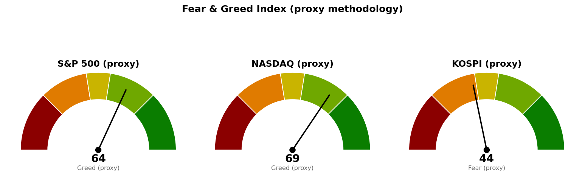

미국 지수·섹터·금리·변동성지수는 9월 21일 뉴욕 세션 장중값(한국시간 9/22 00:30 기준, 개장 약 1시간)입니다. 코스피는 9월 21일 종가, 니케이 225는 9월 18일 종가가 최신입니다.
| 직전에 건 조건 | 판정 | 근거 |
|---|---|---|
| S&P 500 일봉 종가 7,668 회복 | 진행 중 | 장중 7,730으로 62포인트 위에 있으나 세션이 끝나지 않았습니다 |
| S&P 500이 7,604를 종가로 지킴 | 충족 | 장중 저가 7,691로 87포인트 위입니다 |
| S&P 500 도착지 7,760 (고가 도달) | 미충족 | 장중 고가 7,732로 28포인트(하루 평균 변동폭 67의 0.42배) 아래입니다 |
| S&P 500 사다리 1차 7,604 (장중 터치) | 미충족 · 집행 없음 | 저가 7,691로 위에서 멈췄습니다 |
| 나스닥 일봉 종가 26,680 회복 | 진행 중 | 장중 26,952로 272포인트 위에 있으나 세션이 끝나지 않았습니다 |
| 나스닥 사다리 1차 26,271 (장중 터치) | 미충족 · 집행 없음 | 저가 26,707로 436포인트 위입니다 |
| 코스피 기준선 7,054 (종가 상회) | 미충족 | 9/21 종가 6,989로 65포인트(하루 평균 변동폭 232의 0.28배) 아래입니다 |
| 코스피 도착지 7,199 (고가 도달) | 미충족 | 고가 7,028로 171포인트(0.74배) 아래입니다 |
| 코스피가 6,830을 종가로 지킴 | 충족 | 종가 6,989로 159포인트 위입니다 |
| 코스피 사다리 1차 6,702 (장중 터치) | 미충족 · 집행 없음 | 저가 6,938로 236포인트 위입니다 |
| 30년 금리 5.286% 아래 | 미충족 | 장중 5.294%로 0.008%포인트 위이며, 저가 5.287%까지 좁혀졌다가 되돌아왔습니다 |
직전 브리핑이 코스피에 건 계획은 미충족으로 끝났습니다. 직전은 9월 21일 13:53 장중값 7,019을 적고 "오늘 15:30 종가가 7,054 위인지"를 다음 세션의 확인 항목으로 걸었는데, 그 뒤 고가 7,028까지 오른 다음 되밀려 6,989로 마쳤습니다. 7번 반응한 6,996~7,054 구간의 아래쪽으로 되돌아온 마감입니다.
"못 지키면 어디까지"는 이번 구간에서도 시험받지 않았습니다. 세 지수 모두 다음 지지(7,604 · 26,271 · 6,830) 아래로 내려간 적이 없습니다.
직전 계획은 세 지수 모두 살아 있고, 가격은 한 자리도 옮기지 않았습니다. 코스피 기준선 7,054는 미충족이므로 그대로 두고 오늘 15:30 종가로 다시 판정합니다. 미국 두 지수는 기준선을 장중에 넘었을 뿐 종가 판정이 남아 있으므로 역시 그대로 둡니다. 직전 판단에서 방향을 반대로 본 대목은 없습니다.
7,604는 사다리 1차이면서 되돌림 판정선입니다. 장중에 터치하면 1차 회차를 집행하고, 일봉 종가로 그 아래에서 마치면 남은 회차를 멈춥니다. 90일 박스는 7,282~7,794이고 박스 안쪽은 지지 테스트마다 매도 거래량이 늘면서 저점은 절상돼 매집·분산 어느 쪽 우위도 판정되지 않았습니다. 직전과 같습니다.
나스닥은 기준선과 도착지 사이 구간을 한 세션에 통과하는 중이며, 도착지 26,976에 닿으면 이 계획은 완주합니다. 그 위로 근거선은 27,200 라운드 하나뿐이고 26,976과 27,200 사이 224포인트(0.69배)에는 받칠 가격이 없습니다. 90일 박스는 24,807~26,951이고 박스 안에서 저점이 낮아지고 있어 매집·분산 어느 쪽 우위도 판정되지 않았습니다. 일봉 되돌림선은 이번에도 산출되지 않았습니다 — 직전 상승 구간의 종점이 6월 1일로 지금 보는 구간의 앞쪽에 있어 되돌림선이 낡았기 때문입니다.
6,830과 6,651 사이 179포인트(0.77배)에는 받칠 가격이 없습니다. 코스피의 다음 세션 시가는 지금 진행 중인 뉴욕 9월 21일 세션이 정하므로 코스피 계획은 미국장 결과에 선행 종속됩니다 — 미국 두 지수가 기준선 위에서 마치면 코스피는 6,996~7,054 구간을 다시 시험할 자리에서 출발하고, 되밀려 마치면 그 구간 아래에서 출발합니다. 코스피 단독 신호만으로 결론을 앞당기지 마십시오.
세 지수 회차를 전부 집행하면 계좌의 16%(약 22,320,000원 · S&P 500 6% · 나스닥 6% · 코스피 4%)가 지수 노출로 들어갑니다. 세 지수가 모두 취소선까지 밀려 정리하는 최악의 경우 계좌 대비 -0.16%(약 -223,000원)입니다. 갭으로 취소선을 건너뛰고 열리면 실제 손실은 이보다 커집니다. 지수 포인트로만 적었으므로 어떤 종목·ETF로 집행할지는 사용자가 정합니다.
| 지수 | 종가/현재 | 등락 | 고가 | 저가 |
|---|---|---|---|---|
| S&P 500 (9/21 장중) | 7,730 | +1.04% | 7,732 | 7,691 |
| 나스닥 종합 (9/21 장중) | 26,952 | +1.62% | 26,958 | 26,707 |
| 코스피 (9/21 종가) | 6,989 | +1.37% | 7,028 | 6,938 |
| 니케이 225 (9/18 종가) | 65,019 | +1.38% | 65,437 | 64,404 |
미국 두 지수는 전 세션 종가 위로 갭을 띄우고 열려 시가 위에서 거래 중입니다. S&P 500은 시가 7,693 · 저가 7,691로 시가 아래로 내려간 적이 없고, 나스닥도 시가 26,723 · 저가 26,707로 같은 모양입니다. 나스닥 상승폭이 S&P 500의 1.6배이고 지수 대비 20일 초과수익도 +2.23%로, 오늘 상승이 대형 기술주에 몰려 있습니다.
기술만 홀로 벌어졌습니다 — 직전 +3.43%에서 +4.81%로 늘었고, 11개 섹터 중 20일 초과수익이 플러스인 것은 기술과 커뮤니케이션 둘뿐입니다. 에너지는 직전 +0.76%에서 -2.30%로 마이너스로 넘어갔고, 그 하루치 -3.64%는 아래 유가 하락과 같은 방향입니다.
한국 섹터는 테마형 ETF 기준이라 미국 업종 ETF와 성격이 다르고, 두 블록의 막대 길이는 서로 견주지 않습니다. 상위 네 개의 순서와 값은 직전과 거의 같으며(건설 +10.29→+10.56, 반도체 +5.59→+6.05, AI전력기기 +5.14→+5.88, 은행 +2.77→+2.69), 코스피가 +1.37% 오른 9월 21일 하루치로 초과수익이 플러스인 섹터는 반도체(+2.01%포인트) 하나뿐입니다. 미국 기술과 한국 반도체가 같은 축에서 움직이고 있습니다.
| 항목 | 값 | 직전 대비 |
|---|---|---|
| 미국 경기선행지수 (2026년 8월) | 100.96 | 7월 100.89 대비 +0.06 · 직전 브리핑과 같은 값 |
| 한국 경기선행지수 (2026년 8월) | 102.87 | 7월 102.81 대비 +0.06 · 직전 브리핑과 같은 값 |
| 미 10년 명목금리 | 4.959% (9/21 장중, 지수 시세) | 9/18 종가 4.998% 대비 -0.039%포인트 |
| 미 10년 기대물가 | 2.33% (9/18) | 9/17 · 9/16과 같음 |
| 미 10년 실질금리 | 2.61% (9/17) | 9/16 2.68% 대비 -0.07%포인트 |
| 유가 (WTI) | 확정치 107.02달러 (9/15) · 최신 92.36달러 (9/21 선물) | 직전 종가 100.30달러 대비 -7.92% |
| 달러지수 (광의) | 118.21 (9/11) | 9/10 118.08 대비 +0.13 · 이후 갱신 없음 |
| 변동성지수 (VIX) | 14.75 (9/21 장중) | 9/18 종가 14.81 대비 -0.41% · 백분위 25.2 |
경기선행지수는 장기 평균을 100으로 놓고 경기 방향을 몇 달 앞서 보여주는 지표입니다(OECD 작성, 진폭조정 계열). 미국·한국 모두 8월치가 최신이고 새 발표가 없었으므로 직전 브리핑과 값도 해석도 같습니다.
명목금리가 0.039%포인트 내리는 동안 기대물가는 2.33%로 붙어 있었으므로, 내린 몫은 실질금리 쪽입니다. 다만 실질금리 확정치는 9월 17일 2.61%까지만 나와 있어 9월 18일 이후 움직임은 계열에 반영되지 않았고, 달러지수도 9월 11일 이후 갱신이 없어 금리와 달러가 같은 방향인지는 확인하지 못했습니다.
30년 금리 5.294%는 신규 편입 재개 조건선 5.286%에서 0.008%포인트 위입니다. 장중 저가 5.287%로 0.001%포인트까지 좁혀졌다가 되돌아왔고, 이 조건의 다른 한쪽인 S&P 500 7,668은 지금 62포인트 위입니다. 두 조건은 종가로 같이 충족돼야 합니다.
1. AMD 시가총액 1조달러 돌파 (CNBC · MarketWatch, 9월 21일 15:26 · 15:07 UTC) AMD가 미국에서 14번째로 시가총액 1조달러를 넘었고 올해 상승률이 180%를 웃돈다는 기사입니다. 기술 섹터 20일 초과수익이 +3.43%에서 +4.81%로 늘고 나스닥이 S&P 500의 1.6배로 오른 오늘 움직임과 같은 축이며, 한국 반도체 20일 초과 +6.05%도 여기에 붙어 있습니다. 보유 중인 삼성전자 (005930.KS) · SK하이닉스 (000660.KS) · SOL AI반도체TOP2플러스 (0167A0.KS) · SOL 반도체전공정 (475300.KS)에 직접 걸립니다.
2. 국채 금리 하락, 글로벌 차입비용 동반 하락 (CNBC, 9월 21일 15:20 UTC) 지난주 각국 금리 결정 이후 미 국채 금리가 내렸다는 기사입니다. 10년 4.959%(-0.039%포인트) · 30년 5.294%(-0.037%포인트)로, 30년은 신규 편입 재개 조건선 5.286%에서 0.008%포인트까지 붙었습니다. 이 기사가 이번 세션에서 가장 집행에 가까운 재료이며, 판정은 오늘 05:00 종가입니다.
3. 유가 급락 (CNBC 9월 21일 04:51 UTC · Yahoo Finance 시황) 원유 선물이 100.30달러에서 92.36달러로 -7.92% 내렸습니다. 에너지 섹터 20일 초과수익이 +0.76%에서 -2.30%로 마이너스로 넘어간 것이 같은 방향이고, 기대물가가 2.33%로 붙어 있는 것과도 어긋나지 않습니다. 보유 종목 중 에너지 섹터에 직접 걸리는 것은 없습니다.
이번 수집에서는 279건을 받아 10건을 추렸습니다.

세 점수 모두 공식 CNN Fear & Greed 지수가 아니라 모멘텀·상대강도·변동성·안전자산 선호 네 항목으로 계산한 대용 지표입니다. 변동성 항목은 그 지수의 변동성이 자기 과거 3년 분포에서 차지하는 자리로 산출하며, 미국은 변동성지수 14.7이 백분위 25.2(표본 754일), 코스피는 내재변동성 지수가 없어 20일 실현변동성 연율화 33.1%가 백분위 72.3(표본 707일)입니다.
미국 두 지수는 2.2포인트·3.6포인트 올라 탐욕 구간에 남았습니다. S&P 500의 네 항목은 모멘텀 65.5 · 상대강도 57.0 · 변동성 74.8 · 안전자산 선호 55.9입니다.
코스피는 52.7에서 43.5로 9.2포인트 내려 중립에서 공포로 돌아갔습니다. 네 항목 중 안전자산 선호가 77.0에서 50.5로 26.5포인트 내린 것이 하락분의 전부이며, 모멘텀 50.2→44.8 · 변동성 28.8→27.7도 함께 내렸고 상대강도만 55.8→52.7로 거의 같습니다. 직전 브리핑의 코스피 점수는 아직 마감하지 않은 세션의 값이었고, 이번 값은 그 세션이 되밀려 끝난 결과를 반영한 것입니다.
| 날짜 (한국시간) | 이벤트 | 확인할 것 |
|---|---|---|
| 9월 22일 05:00 | 뉴욕 정규장 마감 (미국 9/21) | S&P 500이 7,668 위에서 마치는지 · 나스닥이 26,680 위에서 마치는지 · 30년 금리가 5.286% 아래로 내려오는지 |
| 9월 22일 15:30 | 코스피 마감 | 7,054 위에서 마치는지 · 6,830을 지키는지 |
| 9월 24일 | 미국 주간 신규 실업수당 청구 | |
| 9월 30일 | PCE 물가지수 · GDP | 연준이 보는 물가 지표 |
| 10월 1일 · 8일 · 15일 · 22일 · 29일 | 주간 신규 실업수당 청구 | |
| 10월 2일 | 고용보고서 (비농업 고용 · 실업률) | |
| 10월 14일 | CPI | 10월 FOMC 직전 마지막 물가 지표 |
| 10월 28일 | FOMC (미국 10/27~28) | 30년 금리 조건을 움직일 첫 예정 발표 |
| 10월 29일 | PCE 물가지수 · GDP | |
| 11월 6일 | 고용보고서 | |
| 11월 10일 | CPI |
보유 종목의 실적일은 이번 브리핑에서 따로 조회하지 않았으므로 각 종목 리포트에 등록된 날짜를 따릅니다.
장부에 기록된 보유는 16종목이고 매도 기록은 여전히 없습니다. 계좌 평가액은 139,498,400원으로 등록돼 있으며, 현재 투입 42.6% · 손절까지 남은 손실 합계 1.0%(한도 6%)로 세 한도 모두 여유가 있습니다.
1. 신규 종목 편입은 아직 중단입니다. 지수 조건은 7,730으로 7,668 위에 있으나 세션이 끝나지 않아 확정이 아니고, 금리는 5.294%로 조건선에서 0.008%포인트 위입니다. 오늘 05:00 종가로 두 조건이 함께 충족되면 그때 재개합니다 — 하나만 충족되면 재개하지 않습니다. 2. 매수 쪽 — 지수 사다리는 대기이고 이번 세션에 집행할 회차는 없습니다. 1차 회차는 S&P 500 7,604(126포인트 아래) · 나스닥 26,271(681포인트 아래) · 코스피 6,702(287포인트 아래)로 셋 다 멀어졌습니다. 장중 터치로 판정하므로 눌림이 오면 그때 집행하고, 취소선(7,511 · 25,904 · 6,600)을 일봉 종가로 잃으면 남은 회차를 멈춥니다. 3. Netflix (NFLX) 10주의 판정이 직전 브리핑과 엇갈립니다. 이번 미국 훑기는 9월 18일 집행 손절 74.88달러를 그날 저가 70.11달러가 지났다며 전량 손절로 냈고, 직전 브리핑은 같은 지시를 취소한다고 적었습니다. 같은 자료를 두고 두 배치가 다른 판정을 낸 것이므로 이 시황 브리핑은 새 지시를 내지 않습니다 — NFLX는 오늘 심층 분석 대상에 올라 있으므로 그 리포트가 판정합니다. 4. 훑기가 낸 나머지 조치 세 건은 그대로 집행합니다. Bloom Energy (BE) 1주는 9월 18일 관망 종료 기준 270.25달러를 종가 265.63달러로 잃어 신규 매수 보류이며(보유 1주는 유지, 새 리포트 대기), SOL AI반도체TOP2플러스 (0167A0.KS) 200주는 회복선 17,930원을 종가 18,295원으로 넘었으나 그 리포트가 매수하지 않기로 한 계획이라 추가 매수 없이 보유 유지, LightPath (LPTH) 200주는 회복선 10.04달러를 넘어 추가 진입 여부만 오늘 리포트에서 판단합니다. 5. Fluence Energy (FLNC)에 등록된 기준 가격은 계획으로 성립하지 않습니다. 회복선 12.45달러가 목표 11.21달러보다 위여서 그대로는 수익이 날 자리가 없습니다. 다음 FLNC 리포트가 가격을 다시 등록할 때까지 이 종목의 회복선 판정은 쓰지 마십시오. 보유 270주는 유지입니다. 6. 장부에만 있고 보유목록에 없는 종목이 하나 있습니다 — 삼성물산 (028260.KS) 3주(평단 486,166원)입니다. 목록에 없어 매일 훑기의 대상이 아니므로 지금은 어떤 기준 가격으로도 채점되지 않습니다. 목록에 넣을지 알려 주십시오. 7. 기준 가격이 없는 2종목은 이번에도 판정할 수 없습니다. SOL 반도체전공정 (475300.KS) 350주와 TIGER 미국배당다우존스 (458730.KS) 1,006주이며, 전자는 오늘 심층 분석 대상이고 후자는 다음 배치로 밀렸습니다. 8. DL E&C (375500.KS)를 관심종목에 넣을지 아직 답을 받지 못했습니다. 넣지 않으면 추적하지 않습니다.
다음 세션에 볼 것 하나 — 오늘 05:00 뉴욕 종가가 7,668 위인지입니다. 위에서 마치면 도착지 7,760을 노리는 구간으로 넘어가고 금리 조건과 함께 신규 편입 재개를 판정하며, 아래에서 마치면 장중 돌파가 되밀린 것이므로 기준선을 그대로 두고 다시 시험받기를 기다립니다.
ATR(하루 평균 변동폭): 최근 14일 동안 하루에 오르내린 폭의 평균. · EMA(지수이동평균): 최근 가격에 더 무게를 준 평균 가격선. · RSI(상대강도지수): 최근 14일 오른 폭과 내린 폭의 비율을 0~100으로 나타낸 값. · 겹침 점수: 같은 가격대에 지지·저항 근거가 몇 겹으로 모였는지 나타낸 값이며 클수록 두껍습니다. · 20일 초과수익: 최근 20거래일 수익률에서 기준 지수 수익률을 뺀 값.
이 문서는 참고 정보이며 투자자문이 아닙니다. 모든 수치는 위에 적은 기준 시각의 시장 자료에서 가져온 것이고, 투자 판단과 그 결과에 대한 책임은 투자자 본인에게 있습니다.